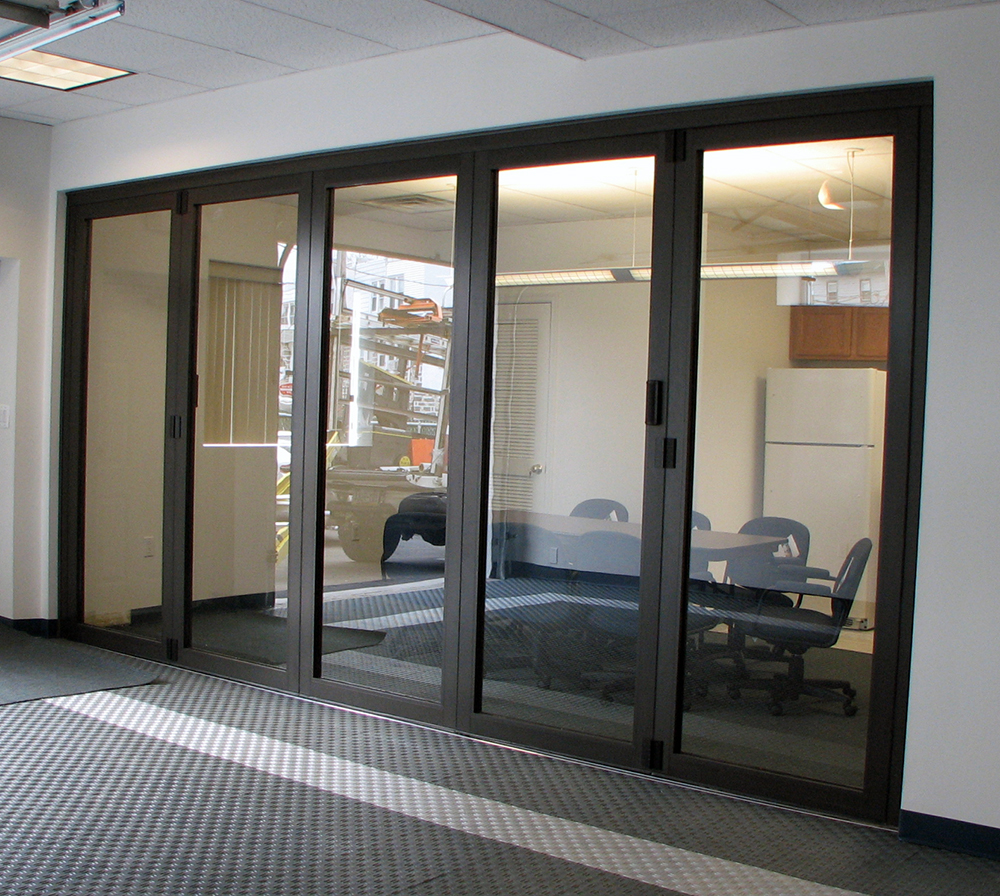

Алюмінієві вхідні двері – комфортне та безпечне рішення на десятки років. У розділі алюмінієві вікна Ми вже розбирали переваги даного типу вікон і для дверей це також актуально.

1) Двері з алюмінієвого профілю дають величезну свободу як з дизайнерської так і з конструкторської сторони, дозволяючи створювати конструкції великого розміру з внутрішнім та зовнішнім відчиненням, двостулкові та поворотні двері.
2) Алюмінієві вікна та двері дотримуються всіх параметрів безпеки завдяки своєму міцному профілю. Установка багатоточкових замків замикання дозволяє підвищити безпеку ще на сходинку вище, при цьому не втрачаючи краси зовнішнього вигляду.
3) Великий діапазон кольорів: можна вибрати будь-яку з тисячі різних кольорів і відтінків, а також варіантів покриттів: глянсове, матове, металеве або структурне Coatex. Останнє дуже добре протистоїть подряпинам. Для максимальної відповідності Вашому інтер'єру, внутрішній і зовнішній профіль можна пофарбувати в будь-який колір.
Алюмінієві двері ідеально підійдуть для тих, хто шукає ідеальне поєднання дизайну, практичності та безпеки. Фірма «ВІД» займається виробництвом та встановленням алюмінієвих дверей з якісних профілів Reynaers та Altest, а також їх гарантійне обслуговування та ремонт протягом 18 років. Замовляючи вікна та двері у нас, Ви отримуєте якісно виконану роботу від професіоналів своєї справи на довгі роки вперед.